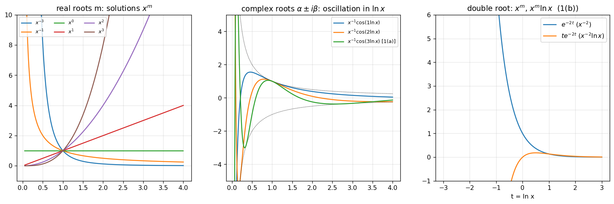
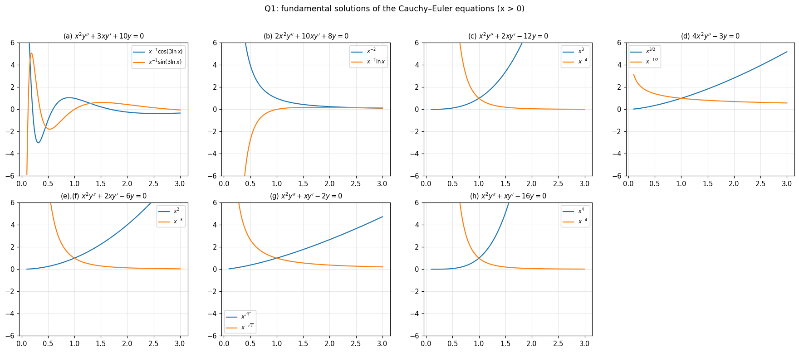
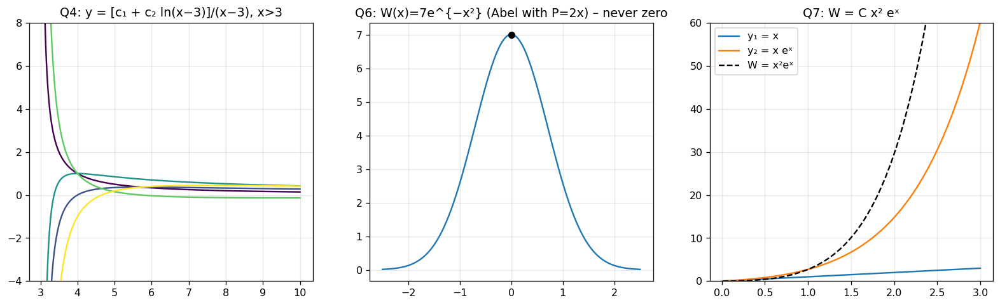
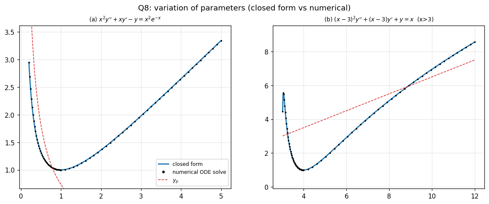
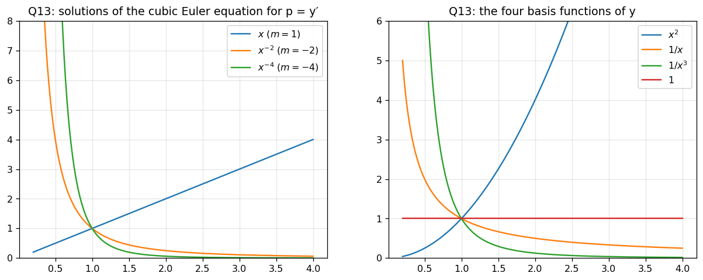

Every answer was re-derived, checked symbolically (SymPy) and compared with a numerical ODE solve (see figures). Changes:
11(c) was wrong. Correct: yp=−4x(ln2x+lnx).
8(b): the particular solution is 2x+23. (Both the earlier note and the sheet's printed answer "x2+23" fail to satisfy the equation; the sheet's "x2" is most likely the fraction x/2 read as x2.)
1(e) and 1(f) are the same equation in the sheet (both x2y′′+2xy′−6y=0).
Q13: the sheet does not give boundary conditions, so only the general solution can be determined (details below).
0. Theory toolkit
0.1 Cauchy–Euler equations
ax2y′′+bxy′+cy=g(x),x>0(use ∣x∣ for x<0).
Substituting x=et (t=lnx) and writing θ=dtd:
xy′=θy,x2y′′=θ(θ−1)y,x3y′′′=θ(θ−1)(θ−2)y
so the equation becomes a constant-coefficient equation in t. Trying y=xm gives the indicial (auxiliary) equation directly:
am(m−1)+bm+c=0.
Roots of the indicial equation
Solution (for x>0)
real distinct m1,m2
c1xm1+c2xm2
real double m
xm(c1+c2lnx)
complex α±iβ
xα[c1cos(βlnx)+c2sin(βlnx)]
m of multiplicity k
xm(c1+c2lnx+⋯+cklnk−1x)

0.2 Non-homogeneous Euler equations
Either transform to t=lnx and use undetermined coefficients (UC) with forcing g(et), or use variation of parameters (VOP) in x with y1,y2 from the table, after dividing by the leading coefficient.
0.3 Shifted Euler equations
b0(ax+b)2y′′+b1(ax+b)y′+b2y=0: with t=ax+b we have yx=ayt, yxx=a2ytt, so it becomes b0a2t2ytt+b1atyt+b2y=0, a Cauchy–Euler equation in t (Q4).
0.4 Constant-coefficient higher order
p(D)y=g, with p(D)=∏(D−rj)kj. UC: yp=xs⋅(form of g), with s the multiplicity of the exponent. Shift rule:p(D)(eαxu)=eαxp(D+α)u. For a simple root with g=Aeαx: yp=p′(α)Axeαx; for non-resonant g=Aeαx: yp=p(α)Aeαx.
0.5 Reduction of the order
If the equation contains y only through derivatives (or is Euler type in y′), put p=y′.
0.6 Wronskian facts
Abel: W=W(x0)exp(−∫P) for y′′+Py′+Qy=0 (Q6, Q7).
Q1
General solution of the Cauchy–Euler equations (a)–(h).
Show solution
Indicial equation am(m−1)+bm+c=0, i.e. m2+ab−am+ac=0:
Equation
Indicial equation
Roots
General solution (x>0)
(a)
x2y′′+3xy′+10y=0
m2+2m+10=0
−1±3i
x−1[c1cos(3lnx)+c2sin(3lnx)]
(b)
2x2y′′+10xy′+8y=0
m2+4m+4=0
−2 (double)
x−2(c1+c2lnx)
(c)
x2y′′+2xy′−12y=0
m2+m−12=(m+4)(m−3)
3,−4
c1x3+c2x−4
(d)
4x2y′′−3y=0
4m2−4m−3=(2m−3)(2m+1)
23,−21
c1x3/2+c2x−1/2
(e),(f)
x2y′′+2xy′−6y=0
m2+m−6=(m+3)(m−2)
2,−3
c1x2+c2x−3
(g)
x2y′′+xy′−2y=0
m2−2=0
±2
c1x2+c2x−2
(h)
x2y′′+xy′−16y=0
m2−16=0
±4
c1x4+c2x−4

Q2
IVPs.
Show solution
(a)x2y′′+xy′+y=0: m2+1=0, m=±i, y=c1coslnx+c2sinlnx. y(1)=c1=1; y′=x−c1sinlnx+c2coslnx, so y′(1)=c2=1.
y=cos(lnx)+sin(lnx)
(b)4x2y′′+12xy′+3y=0: 4m2+8m+3=(2m+1)(2m+3), m=−21,−23. y=c1x−1/2+c2x−3/2: c1+c2=1 and −2c1−23c2=23 give c2=−2, c1=3.
y=3x−1/2−2x−3/2
Q3
Solve the non-homogeneous equations (substitution x=et suggested).
y′′+2xy′+exsinxy=0, y1(0)=2, y2(0)=−3, y1′(0)=1, y2′(0)=2. Find W(y1,y2) and discuss independence.
Show solution
W(0)=y1(0)y2′(0)−y2(0)y1′(0)=2⋅2−(−3)⋅1=7. With P=2x, Abel's formula gives
W(x)=7exp(−∫0x2tdt)=7e−x2.
Since W(x)>0 for every x, y1 and y2 are linearly independent on R (a fundamental set).
Q7
W for x2y′′−x(x+2)y′+(x+2)y=0, x>0, without solving.
Show solution
Standard form: P=−xx+2=−1−x2. Abel:
W=Ce−∫Pdx=Cexp(∫(1+x2)dx)=Cx2ex.
Check: the equation has the solutions y1=x and y2=xex, whose Wronskian is x(ex+xex)−xex=x2ex (C=1) ✔.

Q8
Variation of parameters.
Show solution
(a)x2y′′+xy′−y=x2e−x. Roots ±1: y1=x, y2=x−1, W=−x2; standard form g=e−x.
u1′=−Wy2g=2e−x⇒u1=−2e−x; u2′=Wy1g=−2x2e−x⇒u2=2e−x(x2+2x+2).
yp=u1x+xu2=e−xxx+1⇒y=c1x+xc2+e−x(1+x1)
(b)(x−3)2y′′+(x−3)y′+y=x. With t=x−3 (so x=t+3) and s=lnt: t2y′′+ty′+y=t+3. y1=coss, y2=sins, W=t1, g=t2t+3:
u1′=−tsins(t+3), u2′=tcoss(t+3). With dt/t=ds: u1=−2es(sins−coss)+3coss, u2=2es(sins+coss)+3sins, and
yp=u1coss+u2sins=2es+3=2t+3=2x+23.
y=c1cos[ln(x−3)]+c2sin[ln(x−3)]+2x+23
The sheet's printed answer (x2+23) does not satisfy the equation: substituting it leaves 5x2−19x+239=x. The correct particular solution is 2x+23 (verified).

Q9
General solution by undetermined coefficients.
Show solution
Characteristic polynomial and roots
yp
How
(a)
(r−1)(r2−2r+2): 1,1±i
−21x3−3x2−213x−211
−2A=1, 12A−2B=0, −18A+8B−2C=−2, 6A−6B+4C−2D=0
(b)
(r+1)(r2−r+1): −1,21±23i
34xe−x
simple root: A=4/p′(−1)=4/3
(c)
(r+1)4
360x6e−x
shift: D4u=x2
(d)
r4−1: ±1,±i
2xcosx
resonance with i: p′(i)=−4i
(e)
(r2+1)(r2+4)
401cos3x
p(3i)=81−45+4=40
(f)
(r2+a2)2
−24a2x3sinax−8a3x2cosax
shift eiax: D2(D+2ia)2u=x
(g)
(r+1)2(r2+1)
e−x(12x3+4x2)
shift: D2(D2−2D+2)u=x
(h)
(r−1)2(r2+4r+5): 1,1,−2±i
16x−1cosx−(16x+323)sinx
complex p(i)=8−8i, p′(i)=−12−8i
(i)
(r−2)(r+1)3
272xe2x
simple root: 2/p′(2)=2/27
(j)
r(r2+2r−1): 0,−1±2
−x3−5x2−27x
yp=x(Ax2+Bx+C): A=−1, B=−5, C=−27
(k)
r(r−1)(r−2)
5x+7e3x
10: 2A=10; 42e3x: 42/p(3)=7
(l)
(r−1)(r−2)(r−3)
−3xe2x
3/p′(2)=3/(−1)
Details
(f) With y=eiaxu, p(D+ia)=((D+ia)2+a2)2=D2(D+2ia)2. D2(D2+4iaD−4a2)u=x; put w=u′′=αx+β: −4a2α=1, 4iaα−4a2β=0, so w=−4a2x−4a3i and u=−24a2x3−8a3ix2; take the imaginary part of eiaxu.
(h)y=eixu: u=αx+β with α=p(i)1=161+i, β=−p(i)2p′(i)=32−2+3i; take the real part of eixu.
Indicial equation for x3y′′′+a2x2y′′+a1xy′+a0y=0: m(m−1)(m−2)+a2m(m−1)+a1m+a0=0.
Indicial equation
Roots
Solution
(a) x3y′′′+3x2y′′=0
m(m−1)(m+1)
0,1,−1
c1+c2x+xc3
(b) x3y′′′+2x2y′′+xy′−y=0
m3−m2+m−1=(m−1)(m2+1)
1,±i
c1x+c2coslnx+c3sinlnx
(c) x3y′′′+x2y′′−2xy′+2y=0
m3−2m2−m+2=(m−1)(m−2)(m+1)
1,2,−1
c1x+c2x2+xc3
(d) x2y′′′+3xy′′−2y′=0
p=y′: m2+2m−2=0
−1±3
c1x3+c2x−3+c3
(d) The equation involves only y′,y′′,y′′′, so with p=y′ it is the second-order Euler equation x2p′′+3xp′−2p=0: p=C1x−1+3+C2x−1−3. Integrating, y=3C1x3−3C2x−3+c3.
Q11
Non-homogeneous Euler equations (third order) and a constant-coefficient one.
(c) in detail. With y=etu: p(θ+1)=θ(θ−1)(θ+2), so θ(θ−1)(θ+2)u=t. Put w=u′: w′′+w′−2w=t, w=αt+β, −2α=1, α−2β=0, so w=−2t−41 and u=−4t2−4t. Hence yp=−4x(ln2x+lnx).
The earlier answer for 11(c) (−43xln2x−41xlnx−83x) fails the equation (its residual is x(2lnx−1)=0).
x3y(4)+8x2y′′′+8xy′′−8y′=0 (drag on a small sphere).
Show solution
The unknown appears only through y′; put p=y′:
x3p′′′+8x2p′′+8xp′−8p=0.
Indicial equation: m(m−1)(m−2)+8m(m−1)+8m−8=m3+5m2+2m−8=(m−1)(m+2)(m+4)=0, so m=1,−2,−4.
p=y′=C1x+C2x−2+C3x−4⟹y=c1x2+xc2+x3c3+c4
About "compute the drag"
The sheet states no boundary conditions (no-slip on the sphere, behaviour far away), and the physical meaning of y(x) is not specified, so the drag itself cannot be computed from the given data. What the ODE determines is the four-parameter family above. In a typical setting the constants are fixed by requiring a bounded (decaying) field at infinity and a prescribed value at the sphere's surface, and the drag is then read off from the coefficient of the slowest-decaying term. I verified the general solution (residual =0).

Summary
Verification
Each result was checked by (i) symbolic substitution, and (ii) comparison with a numerical integration of the ODE (the figures). The only discrepancies were in 11(c) (previous answer wrong), 8(b) (statement of the answer), and the printed answer to 8(b) in the sheet.